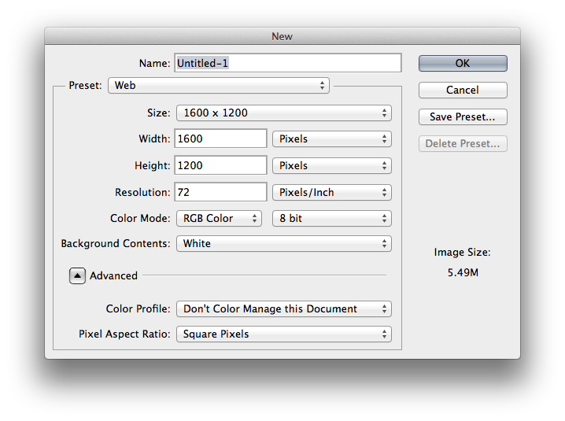

Photoshop for Web Design
Welcome!
Girl Develop It is here to provide affordable and accessible programs to learn software through mentorship and hands-on instruction.
Some "rules"
- We are here for you!
- Every question is important
- Help each other
- Have fun
Well, hello there!
I'm happy to have you here.
Let's take a few minutes and get to know each other.
- Who are you?
- What do you hope to get out of the class?
- If you could have any superpower, what would it be?
Topics for Today
- Why Photoshop, anyway?
- Setting up workspaces, settings, units, tools, etc.
- Creating files for web design
- Layer organization
- Slicing, saving and optimizing FTW!
What to expect
- This is a survey of a very complex, multi-use program
- I hope it'll give you a better sense of the features and applications for web
- I don't know everything, and neither will you
- Have fun! Bang around and mess with features! Ask questions!
Some "Fancy" Lingo
Well...
... it turns out there isn't much to learn, terminology-wise.
PSD: The file extension for a Photoshop files.
We'll cover other terms as we get to them.
Why Photoshop?
Raster vs. Vector
Raster:
- Dot-based
- Dots = pixels (sometimes)
- Cannot resize without quality loss
- GIF, JPG, PNG
- Photoshop
Vector:
- Math-based (!)
- Uses geometry to create graphics (!)
- Infinitely resize while maintaining quality
- SVG
- Illustrator
Photoshop Alternatives
It's kind of hard to get away from Photoshop but some people do! They use:
- Illustrator
- HTML and CSS right in the browser ("designing in the browser")
- Gimp (popular open source alternative)
Units & Settings
New Files
Preferences
Under the Photoshop menu.
- Units & Rulers
- Guides & Grid
Workspaces
are...
Saved arrangements of:
- tools
- tool panels
- keyboard shortcuts
- menus
Roll your own!
(In the Window menu)
might include...
- Type
- Character panel
- Paragraph panel
- Layers panel
- Slice
- Select
- Eyedropper
might look like...
Break!
Creating and working with actual FILES!
Grids & Guides
- Grid systems (960, 1140, various other templates)
- Guides
- Smart guides
- Clipping masks
Layer Organization
- Group and group some more
- Use clear names
- Get rid of the cruft
- Consolidate, within reason
- Repeat yourself
Slicing, saving and optimizing
- Maintaining key file information
- Whole pixels, pls
- Web fonts, pls
- Separate font styles, pls
- Layer comps and other visual tricks
- Slicing and saving for the web
- Optimizing images & retina considerations
Questions?
?